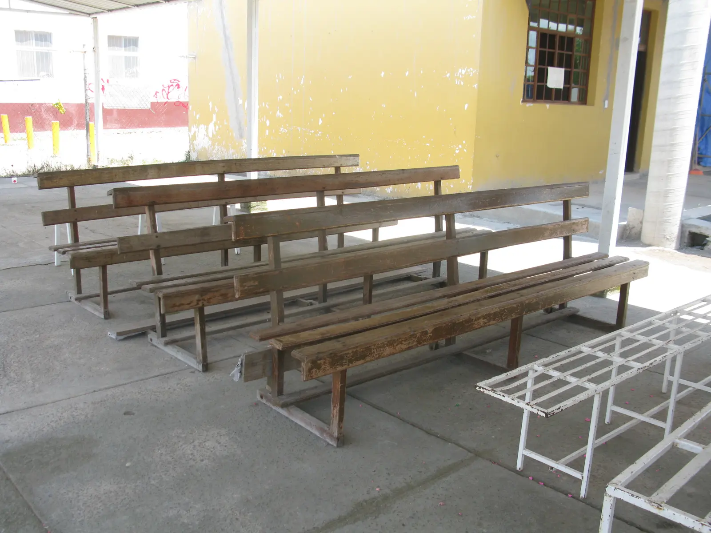
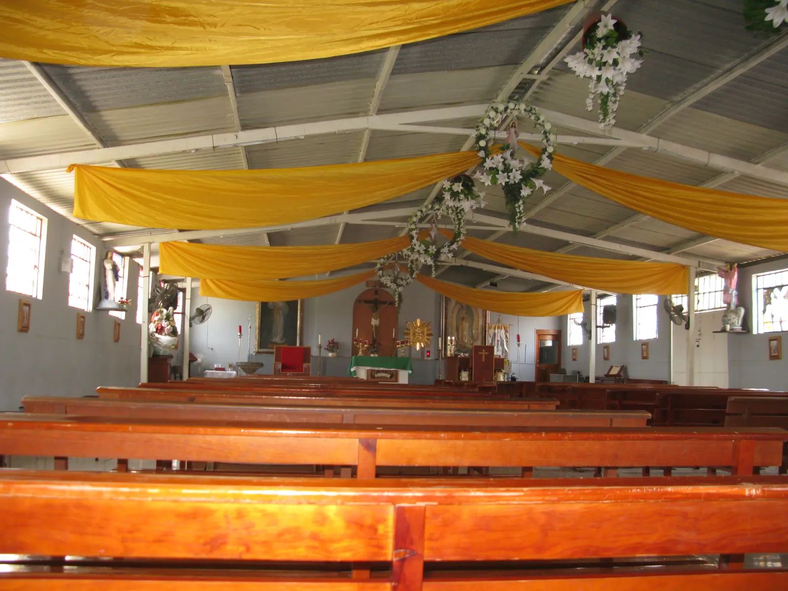
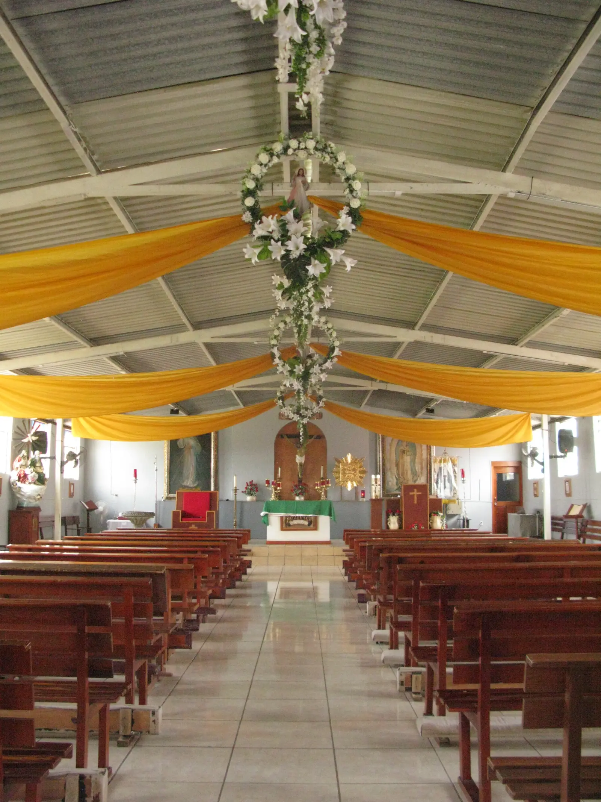

Santa Misa
Lunes a sábado · por confirmar
Domingo · por confirmar
“Nos hiciste, Señor, para ti, y nuestro corazón está inquieto hasta que descanse en ti”.
San Agustín · Confesiones I, 1, 1Siempre hay un momento para volver a casa y encontrarnos como comunidad.
Lunes a sábado · por confirmar
Domingo · por confirmar
Días y horarios por confirmar
También con cita previa
Lunes a viernes · por confirmar
Sábado · por confirmar
Aquí aparecerá la siguiente celebración o encuentro cuando se confirme la información.
Pedir informes


Desliza para ver más · Galería de 14 fotos del templo.
Encuentro y formación para jóvenes.
Acompañamiento en el camino de la fe.
Comunidad, escucha y vida compartida.
El Salto, Jalisco
Dirección y contacto por confirmar.